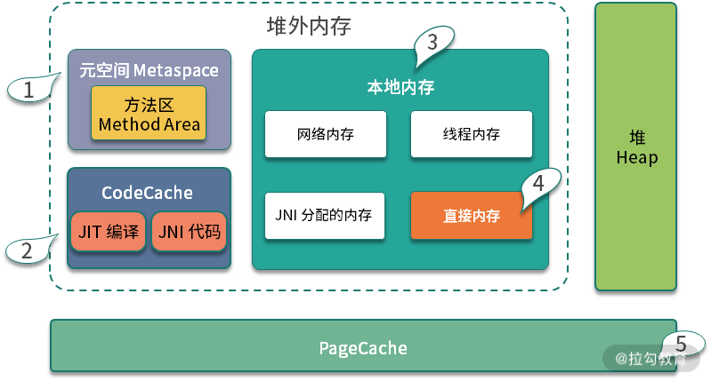

- 00 Java 性能优化，是进阶高级架构师的炼金石.md.html
- 01 理论分析：性能优化，有哪些衡量指标？需要注意什么？.md.html
- 02 理论分析：性能优化有章可循，谈谈常用的切入点.md.html
- 03 深入剖析：哪些资源，容易成为瓶颈？.md.html
- 04 工具实践：如何获取代码性能数据？.md.html
- 05 工具实践：基准测试 JMH，精确测量方法性能.md.html
- 06 案例分析：缓冲区如何让代码加速.md.html
- 07 案例分析：无处不在的缓存，高并发系统的法宝.md.html
- 08 案例分析：Redis 如何助力秒杀业务.md.html
- 09 案例分析：池化对象的应用场景.md.html
- 10 案例分析：大对象复用的目标和注意点.md.html
- 11 案例分析：如何用设计模式优化性能.md.html
- 12 案例分析：并行计算让代码“飞”起来.md.html
- 13 案例分析：多线程锁的优化.md.html
- 14 案例分析：乐观锁和无锁.md.html
- 15 案例分析：从 BIO 到 NIO，再到 AIO.md.html
- 16 案例分析：常见 Java 代码优化法则.md.html
- 17 高级进阶：JVM 如何完成垃圾回收？.md.html
- 18 高级进阶：JIT 如何影响 JVM 的性能？.md.html
- 19 高级进阶：JVM 常见优化参数.md.html
- 20 SpringBoot 服务性能优化.md.html
- 21 性能优化的过程方法与求职面经总结.md.html
- 22 结束语 实践出真知.md.html
- 捐赠
19 高级进阶：JVM 常见优化参数
现在大家用得最多的 Java 版本是 Java 8，如果你的公司比较保守，那么使用较多的垃圾回收器就是 CMS 。但 CMS 已经在 Java 14 中被正式废除，随着 ZGC 的诞生和 G1 的稳定，CMS 终将成为过去式。
Java 9 之后，Java 版本已经进入了快速发布阶段，大约是每半年发布一次，Java 8 和 Java 11 是目前支持的 LTS 版本。
由于 JVM 一直处在变化之中，所以一些参数的配置并不总是有效的。有时候你加入一个参数，“感觉上”运行速度加快了，但通过 -XX:+PrintFlagsFinal 来查看，却发现这个参数默认就是这样了。
所以，在不同的 JVM 版本上，不同的垃圾回收器上，要先看一下这个参数默认是什么，不要轻信别人的建议，命令行示例如下：
java -XX:+PrintFlagsFinal -XX:+UseG1GC 2>&1 | grep UseAdaptiveSizePolicy
还有一个与之类似的参数叫作 PrintCommandLineFlags，通过它，你能够查看当前所使用的垃圾回收器和一些默认的值。
可以看到下面的 JVM 默认使用的就是并行收集器：
# java -XX:+PrintCommandLineFlags -version
-XX:InitialHeapSize=127905216 -XX:MaxHeapSize=2046483456 -XX:+PrintCommandLineFlags -XX:+UseCompressedClassPointers -XX:+UseCompressedOops -XX:+UseParallelGC
openjdk version "1.8.0_41"
OpenJDK Runtime Environment (build 1.8.0_41-b04)
OpenJDK 64-Bit Server VM (build 25.40-b25, mixed mode)
JVM 的参数配置繁多，但大多数不需要我们去关心。 下面，我们通过对 ES 服务的 JVM 参数分析，来看一下常见的优化点。
ElasticSearch（简称 ES）是一个高性能的开源分布式搜索引擎。ES 是基于 Java 语言开发的，在它的 conf 目录下，有一个叫作jvm.options的文件，JVM 的配置就放在这里。
堆空间的配置
下面是 ES 对于堆空间大小的配置。
-Xms1g
-Xmx1g
我们在 “17 | 高级进阶：JVM 如何完成垃圾回收？” 就聊到过，JVM 中空间最大的一块就是堆，垃圾回收也主要是针对这块区域。通过 Xmx 可指定堆的最大值，通过 Xms 可指定堆的初始大小。我们通常把这两个参数，设置成一样大小的，可避免堆空间在动态扩容时的时间开销。
在配置文件中还有 AlwaysPreTouch 这个参数。
-XX:+AlwaysPreTouch
其实，通过 Xmx 指定了的堆内存，只有在 JVM 真正使用的时候，才会进行分配。这个参数，在 JVM 启动的时候，就把它所有的内存在操作系统分配了。在堆比较大的时候，会加大启动时间，但它能够减少内存动态分配的性能损耗，提高运行时的速度。
如下图，JVM 的内存，分为堆和堆外内存，其中堆的大小可以通过 Xmx 和 Xms 来配置。

但我们在配置 ES 的堆内存时，通常把堆的初始化大小，设置成物理内存的一半。这是因为 ES 是存储类型的服务，我们需要预留一半的内存给文件缓存（理论参见 “07 | 案例分析：无处不在的缓存，高并发系统的法宝”），等下次用到相同的文件时，就不用与磁盘进行频繁的交互。这一块区域一般叫作 PageCache，占用的空间很大。
对于计算型节点来说，比如我们普通的 Web 服务，通常会把堆内存设置为物理内存的 2/3，剩下的 1⁄3 就是给堆外内存使用的。
我们这张图，对堆外内存进行了非常细致的划分，解释如下：
- 元空间 参数 -XX:MaxMetaspaceSize 和 -XX:MetaspaceSize，分别指定了元空间的最大内存和初始化内存。因为元空间默认是没有上限的，所以极端情况下，元空间会一直挤占操作系统剩余内存。
- JIT 编译后代码存放 -XX:ReservedCodeCacheSize。JIT 是 JVM 一个非常重要的特性，CodeCahe 存放的，就是即时编译器所生成的二进制代码。另外，JNI 的代码也是放在这里的。
- 本地内存 本地内存是一些其他 attch 在 JVM 进程上的内存区域的统称。比如网络连接占用的内存、线程创建占用的内存等。在高并发应用下，由于连接和线程都比较多，这部分内存累加起来还是比较可观的。
- 直接内存 这里要着重提一下直接内存，因为它是本地内存中唯一可以使用参数来限制大小的区域。使用参数 -XX:MaxDirectMemorySize，即可设定 ByteBuffer 类所申请的内存上限。
- JNI 内存 上面谈到 CodeCache 存放的 JNI 代码，JNI 内存就是指的这部分代码所 malloc 的具体内存。很可惜的是，这部分内存的使用 JVM 是无法控制的，它依赖于具体的 JNI 代码实现。
日志参数配置
下面是 ES 的日志参数配置，由于 Java 8 和 Java 9 的参数配置已经完全不一样了，ES 在这里也分了两份。
8:-XX:+PrintGCDetails
8:-XX:+PrintGCDateStamps
8:-XX:+PrintTenuringDistribution
8:-XX:+PrintGCApplicationStoppedTime
8:-Xloggc:logs/gc.log
8:-XX:+UseGCLogFileRotation
8:-XX:NumberOfGCLogFiles=32
8:-XX:GCLogFileSize=64m
9-:-Xlog:gc*,gc+age=trace,safepoint:file=logs/gc.log:utctime,pid,tags:filecount=32,filesize=64m
下面解释一下这些参数的意义，以 Java 8 为例。
- PrintGCDetails 打印详细 GC 日志。
- PrintGCDateStamps 打印当前系统时间，更加可读；与之对应的是PrintGCDateStamps 打印的是JVM启动后的相对时间，可读性较差。
- PrintTenuringDistribution 打印对象年龄分布，对调优 MaxTenuringThreshold 参数帮助很大。
- PrintGCApplicationStoppedTime 打印 STW 时间
- 下面几个日志参数是配置了类似于 Logback 的滚动日志，比较简单，不再详细介绍
从 Java 9 开始，JVM 移除了 40 多个 GC 日志相关的参数，具体参见 JEP 158。所以这部分的日志配置有很大的变化，GC 日志的打印方式，已经完全不一样了，比以前的日志参数规整了许多。
参数如下所示：
9-:-Xlog:gc*,gc+age=trace,safepoint:file=logs/gc.log:utctime,pid,tags:filecount=32,filesize=64m
再来看下 ES 在异常情况下的配置参数：
-XX:+HeapDumpOnOutOfMemoryError
-XX:HeapDumpPath=data
-XX:ErrorFile=logs/hs_err_pid%p.log
HeapDumpOnOutOfMemoryError、HeapDumpPath、ErrorFile 是每个 Java 应用都应该配置的参数。正常情况下，我们通过 jmap 获取应用程序的堆信息；异常情况下，比如发生了 OOM，通过这三个配置参数，即可在发生OOM的时候，自动 dump 一份堆信息到指定的目录中。
拿到了这份 dump 信息，我们就可以使用 MAT 等工具详细分析，找到具体的 OOM 原因。
垃圾回收器配置
ES 默认使用 CMS 垃圾回收器，它有以下三行主要的配置。
-XX:+UseConcMarkSweepGC
-XX:CMSInitiatingOccupancyFraction=75
-XX:+UseCMSInitiatingOccupancyOnly
下面介绍一下这两个参数：
- UseConcMarkSweepGC，表示年轻代使用 ParNew，老年代的用 CMS 垃圾回收器
- -XX:CMSInitiatingOccupancyFraction 由于 CMS 在执行过程中，用户线程还需要运行，那就需要保证有充足的内存空间供用户使用。如果等到老年代空间快满了，再开启这个回收过程，用户线程可能会产生“Concurrent Mode Failure”的错误，这时会临时启用 Serial Old 收集器来重新进行老年代的垃圾收集，这样停顿时间就很长了（STW）。
这部分空间预留，一般在 30% 左右即可，那么能用的大概只有 70%。参数 -XX:CMSInitiatingOccupancyFraction 用来配置这个比例，但它首先必须配置 -XX:+UseCMSInitiatingOccupancyOnly 参数。
另外，对于 CMS 垃圾回收器，常用的还有下面的配置参数：
- -XX:ExplicitGCInvokesConcurrent 当代码里显示的调用了 System.gc()，实际上是想让回收器进行FullGC，如果发生这种情况，则使用这个参数开始并行 FullGC。建议加上。
- -XX:CMSFullGCsBeforeCompaction 默认为 0，就是每次FullGC都对老年代进行碎片整理压缩，建议保持默认。
- -XX:CMSScavengeBeforeRemark 开启或关闭在 CMS 重新标记阶段之前的清除（YGC）尝试。可以降低 remark 时间，建议加上。
- -XX:+ParallelRefProcEnabled 可以用来并行处理 Reference，以加快处理速度，缩短耗时。
CMS 垃圾回收器，已经在 Java14 中被移除，由于它的 GC 时间不可控，有条件应该尽量避免使用。
针对 Java10（普通 Java 应用在 Java 8 中即可开启 G1），ES 可采用 G1 垃圾回收器。我们在 “17 | 高级进阶：JVM 如何完成垃圾回收？” 介绍过 G1，它可以通过配置参数 MaxGCPauseMillis，指定一个期望的停顿时间，使用相对比较简单。
下面是主要的配置参数：
- -XX:MaxGCPauseMillis 设置目标停顿时间，G1 会尽力达成。
- -XX:G1HeapRegionSize 设置小堆区大小。这个值为 2 的次幂，不要太大，也不要太小。如果是在不知道如何设置，保持默认。
- -XX:InitiatingHeapOccupancyPercent 当整个堆内存使用达到一定比例（默认是45%），并发标记阶段就会被启动。
- -XX:ConcGCThreads 并发垃圾收集器使用的线程数量。默认值随 JVM 运行的平台不同而不同。不建议修改。
JVM 支持非常多的垃圾回收器，下面是最常用的几个，以及配置参数：
- -XX:+UseSerialGC 年轻代和老年代都用串行收集器
- -XX:+UseParallelGC 年轻代使用 ParallerGC，老年代使用 Serial Old
- -XX:+UseParallelOldGC 新生代和老年代都使用并行收集器
- -XX:+UseG1GC 使用 G1 垃圾回收器
- -XX:+UseZGC 使用 ZGC 垃圾回收器
额外配置
我们再来看下几个额外的配置。
-Xss1m
-Xss设置每个 Java 虚拟机栈的容量为 1MB。这个参数和 -XX:ThreadStackSize 是一样的，默认就是 1MB。
-XX:-OmitStackTraceInFastThrow
把 - 换成 +，可以减少异常栈的输出，进行合并。虽然会对调试有一定的困扰，但能在发生异常时显著增加性能。随之而来的就是异常信息不好排查，ES 为了找问题方便，就把错误合并给关掉了。
-Djava.awt.headless=true
Headless 模式是系统的一种配置模式，在该模式下，系统缺少了显示设备、键盘或鼠标。在服务器上一般是没这些设备的，这个参数是告诉虚拟机使用软件去模拟这些设备。
9-:-Djava.locale.providers=COMPAT
-Dfile.encoding=UTF-8
-Des.networkaddress.cache.ttl=60
-Des.networkaddress.cache.negative.ttl=10
-Dio.netty.noUnsafe=true
-Dio.netty.noKeySetOptimization=true
-Dio.netty.recycler.maxCapacityPerThread=0
-Dlog4j.shutdownHookEnabled=false
-Dlog4j2.disable.jmx=true
-Djava.io.tmpdir=${ES_TMPDIR}
-Djna.nosys=true
上面这些参数，通过 -D 参数，在启动一个 Java 程序时，设置系统属性值，也就是在 System 类中通过 getProperties() 得到的一串系统属性。
这部分自定义性比较强，不做过多介绍。
其他调优
以上就是 ES 默认的 JVM 参数配置，大多数还是比较基础的。在平常的应用服务中，我们希望得到更细粒度的控制，其中比较常用的就是调整各个分代之间的比例。
- -Xmn 年轻代大小，默认年轻代占堆大小的 1/3。高并发快消亡场景可适当加大这个区域，对半或者更多都是可以的。但是在 G1 下，就不用再设置这个值了，它会自动调整；
- -XX:SurvivorRatio 默认值为 8，表示伊甸区和幸存区的比例；
- -XX:MaxTenuringThreshold 这个值在 CMS 下默认为 6，G1 下默认为 15。这个值和我们前面提到的对象提升有关，改动效果会比较明显。对象的年龄分布可以使用 -XX:+PrintTenuringDistribution 打印，如果后面几代的大小总是差不多，证明过了某个年龄后的对象总能晋升到老年代，就可以把晋升阈值设的小一些；
- PretenureSizeThreshold 超过一定大小的对象，将直接在老年代分配，不过这个参数用得不是很多。
练习：cassandra 的参数配置
了解了我们上面说的配置参数，大家可以拿 cassandra 的配置文件分析一下，cassandra 是一个高速的列存数据库，使用 gossip 进行集群维护，它的 JVM 参数配置同样在 jvm.options 中。
为了方便大家分析，我把 ES 和 cassandra 的这两个配置文件也上传到了仓库中，你可以实际练习一下，如果你有什么疑问，欢迎在下方留言区讨论。
© 2019 - 2023 Liangliang Lee. Powered by gin and hexo-theme-book.